COSMORA
by Ayush
The Journey Continues
Into the
Black Hole
A cinematic look at the most extreme objects in the universe — places where light cannot escape and time bends beyond recognition.
Descend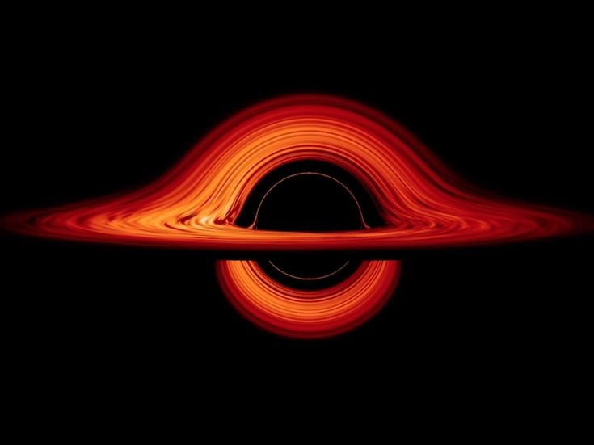
Stage 01
What Is a Black Hole
A black hole is a place in space where gravity is so strong that nothing — not even light — can escape it. This happens once something crosses a line called the event horizon.
Black holes don't roam space "eating" things nearby. They follow the same rules of gravity as any other object. If the Sun were swapped for a black hole of equal mass, Earth's orbit wouldn't change at all. What makes them different is how extreme their gravity gets up close, where the escape speed passes the speed of light.
They come in many sizes — from a few times the Sun's mass to supermassive giants billions of times heavier, sitting at the centers of entire galaxies.
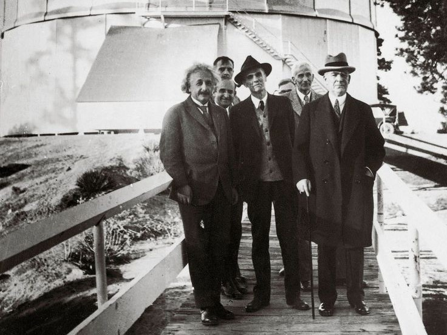
Stage 02
History of the Idea
The idea began in 1783, when John Michell suggested a star could be so dense that even light couldn't escape it — a "dark star." Pierre-Simon Laplace had a similar idea soon after.
The real breakthrough came in 1915, when Einstein published general relativity. Soon after, Karl Schwarzschild found an exact solution describing space around a point of mass — which hinted at what we now call the event horizon. For decades this stayed a math curiosity, not something people thought was real.
Only in the 1960s, when John Wheeler coined the term "black hole" and astronomers found neutron stars and quasars, did scientists accept these objects likely exist across the universe.
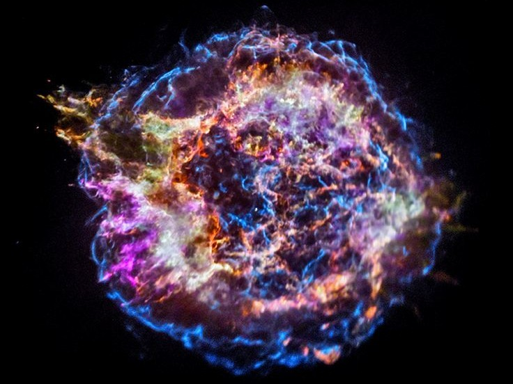
Stage 03
Formation
Stellar-mass black holes come from dying massive stars. A star balances two forces: gravity pulling in, and fusion energy pushing out. When a star roughly eight times the Sun's mass runs out of fuel, fusion can't hold gravity back any longer.
The core collapses in seconds, triggering a supernova that blasts the outer layers into space. If what's left weighs more than about three Suns, nothing can stop the collapse — the core shrinks without limit and becomes a black hole.
Supermassive black holes may form differently — through collapsing gas clouds, mergers of smaller black holes, or a small "seed" that kept growing in the crowded early universe.
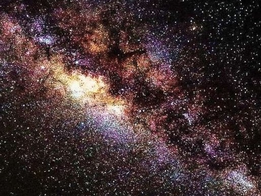
Stage 04
Types of Black Holes
Black holes are grouped mainly by mass. Stellar-mass black holes, about 3 to 100 solar masses, form from collapsing stars. They're the type we detect most often, usually in binary systems or through gravitational-wave mergers.
Intermediate-mass black holes fall between 100 and 100,000 solar masses. They're rare and hard to confirm, likely built from repeated mergers in packed star clusters. Supermassive black holes, millions to billions of solar masses, sit at the center of nearly every large galaxy — including ours.
A fourth, still-theoretical type — primordial black holes — may have formed from density ripples right after the Big Bang, before any star existed. These could range from tiny to planet-sized and are a candidate for explaining dark matter.
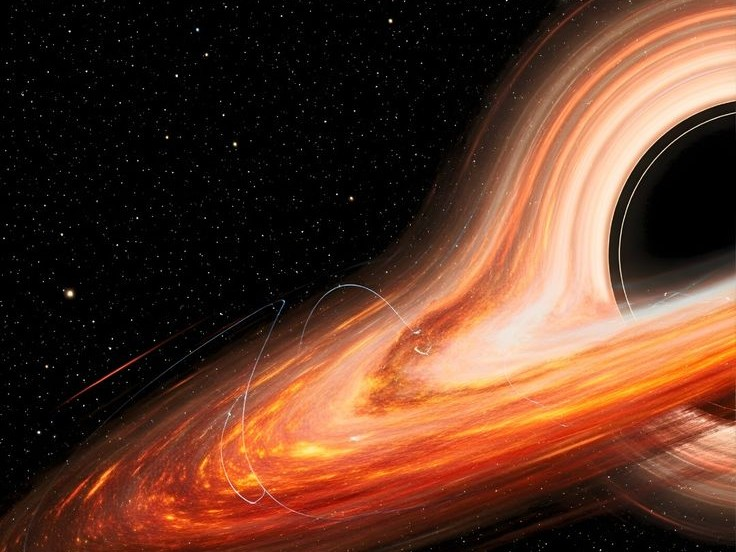
Stage 05
Event Horizon
The event horizon is a black hole's defining edge — a boundary in space beyond which nothing, including light, moves fast enough to escape the pull inward. It's not a physical wall, just a point of no return built into the geometry of space itself.
Its size depends only on mass, described by the Schwarzschild radius. For a black hole with the Sun's mass, that radius would be about three kilometers. For Sagittarius A*, it spans roughly 24 million kilometers.
Crossing the horizon wouldn't feel special to someone falling in — no wall, no flash, no warning sign. Local physics stays ordinary right at that point. Only from the outside does the horizon look like a hard edge, where falling light appears to freeze and fade, growing dimmer and redder as it nears it.
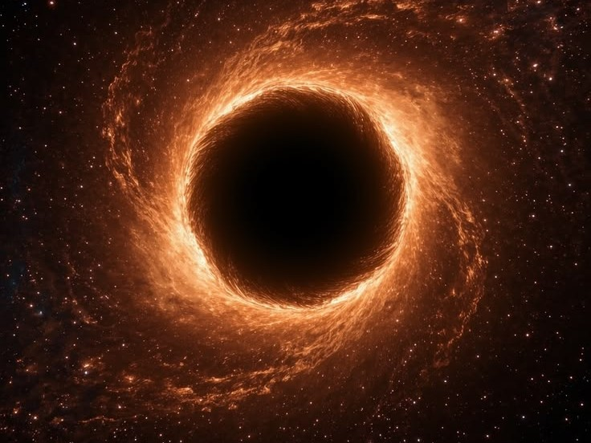
Stage 06
Singularity
At the center of a black hole, general relativity predicts a singularity — a point (or, for spinning black holes, a ring) where density becomes infinite and space curves without limit. Here, the equations of general relativity simply break down.
Most physicists don't see this as a literal infinite point, but as a sign that general relativity is incomplete at these extremes. A full theory of quantum gravity — merging quantum mechanics with gravity — is likely needed to explain what really happens there.
Roger Penrose's cosmic censorship idea suggests singularities are always hidden behind event horizons, keeping their infinities away from the rest of the universe. It's unproven, but it has held up in every realistic case studied so far.
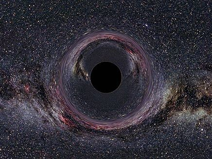
Stage 07
Accretion Disk
Black holes themselves are invisible, but the material falling toward them often isn't. Gas and dust rarely fall straight in — instead, they flatten into a swirling accretion disk that spirals inward over time.
Friction inside the disk heats material to millions of degrees, making it glow brightly across the spectrum — from visible light to X-rays. This is one of the main ways astronomers detect black holes: by watching the radiation their surrounding material gives off.
Close to the black hole, its gravity bends the disk's own light around it, creating the glowing ring seen in the 2019 Event Horizon Telescope image — light from behind the black hole warped into view above, below, and around a dark central shadow.
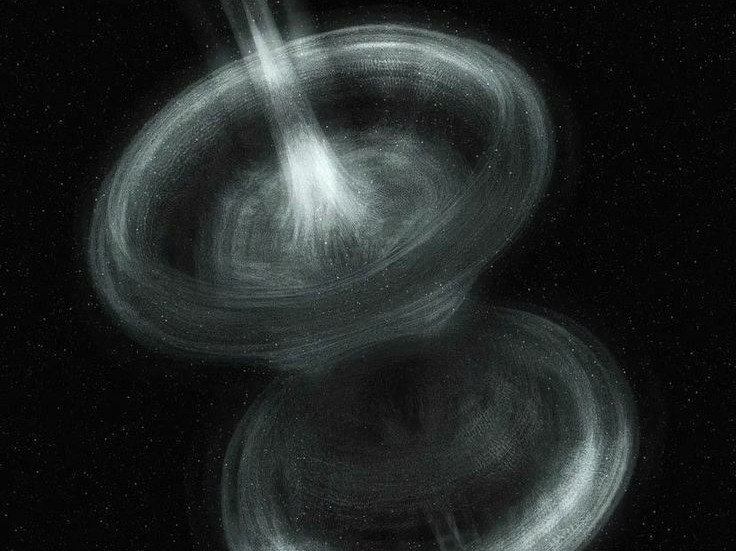
Stage 08
Gravitational Lensing
Massive objects curve the fabric of space, and light bends along with it — an effect Einstein predicted and that was confirmed during the 1919 solar eclipse. Near a black hole, this bending gets strong enough to visibly warp the sky.
Light from stars behind a black hole can be stretched into arcs, doubled into multiple images, or wrapped fully around the object as a glowing "Einstein ring." Close to the horizon, light can orbit the black hole once or more before moving on, creating rings within rings in simulations and telescope images alike.
This bending is also a useful tool: astronomers use it to spot otherwise invisible massive objects, measure dark matter, and magnify distant galaxies too faint to see directly.
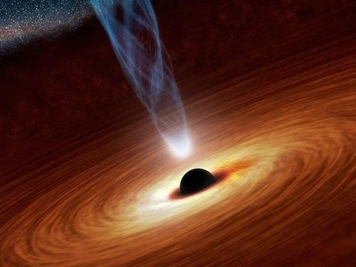
Stage 09
Hawking Radiation
In 1974, Stephen Hawking proposed that black holes aren't perfectly black. Quantum mechanics allows pairs of particles to briefly appear near the event horizon. Sometimes one falls in while the other escapes, carrying energy away. From far away, this looks like faint heat radiating from the black hole.
This means black holes slowly lose mass and, in theory, could eventually evaporate — though for a stellar-mass black hole, that would take far longer than the universe has existed so far.
No one has directly observed Hawking radiation yet; it's too faint against the background of space. Its real importance is theoretical — it links gravity, quantum mechanics, and thermodynamics, and raises the unsolved "information paradox": is information swallowed by a black hole lost forever?
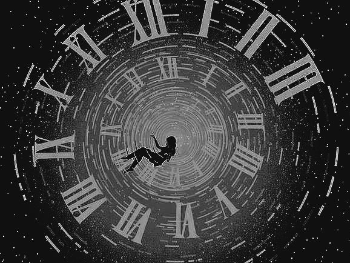
Stage 10
Time Dilation
General relativity says time runs slower in stronger gravity — an effect called time dilation, which becomes extreme near a black hole. A clock close to the event horizon would tick noticeably slower than the same clock far away.
To someone watching from a distance, an object falling toward a black hole would appear to slow down and redden, seeming to freeze right at the horizon — even though, in its own time, it crosses that line normally.
This isn't science fiction. GPS satellites already correct for a much smaller version of this effect caused by Earth's own gravity — without that fix, positioning would drift by kilometers each day.
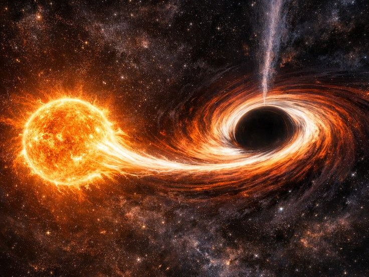
Stage 11
Spaghettification
Gravity gets weaker with distance, so an object falling toward a black hole feels a much stronger pull on the near side than the far side. This difference — called a tidal force — stretches the object lengthwise while squeezing it from the sides.
Scientists call this spaghettification: with enough tidal force, any object — even a human body — would stretch into a long thin strand before ever reaching the singularity.
How strong this gets depends on the black hole's size. Around a small stellar-mass black hole, tidal forces turn deadly long before the horizon. Around a supermassive one, the horizon is so large that forces there are gentler — an astronaut could cross it in one piece, only to face spaghettification deeper inside.
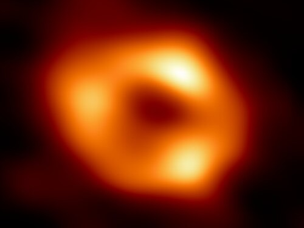
Stage 12
Sagittarius A*
Sagittarius A* (say "Sagittarius A-star") is the supermassive black hole at the center of the Milky Way, about 27,000 light-years from Earth. It holds around 4.3 million times the Sun's mass, packed into a space smaller than Mercury's orbit.
Decades of tracking stars whipping around this invisible point — work that earned Reinhard Genzel and Andrea Ghez a share of the 2020 Nobel Prize in Physics — gave the strongest indirect proof of its existence and mass.
In May 2022, the Event Horizon Telescope team released the first direct image of Sagittarius A*, showing a dark shadow ringed by glowing, superheated gas — matching what general relativity predicted for our own galaxy's central black hole.
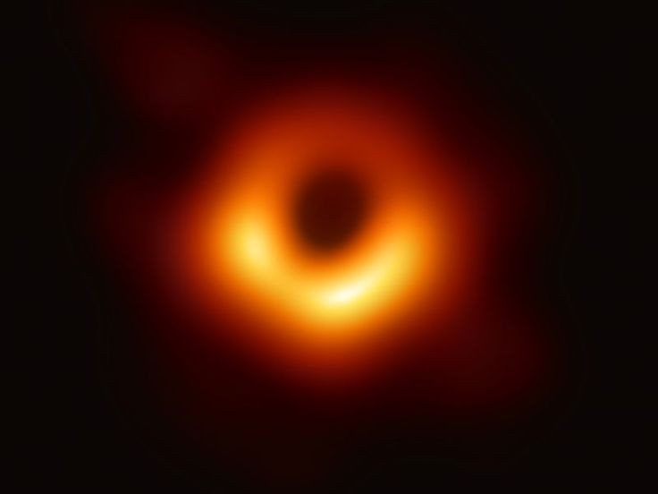
Stage 13
M87*
M87*, the supermassive black hole at the center of the galaxy Messier 87, made history in April 2019 as the subject of the first-ever direct image of a black hole, captured by the Event Horizon Telescope — a global network of radio dishes acting as one Earth-sized instrument.
About 55 million light-years away, M87* is huge even by supermassive standards — roughly 6.5 billion solar masses. Its image showed the now-famous glowing ring of hot plasma around a dark shadow, matching general relativity's predictions closely.
M87 also has one of the most powerful known jets — a beam of particles shot out at nearly light speed, likely powered by the black hole's spin and magnetic field, stretching thousands of light-years into space.
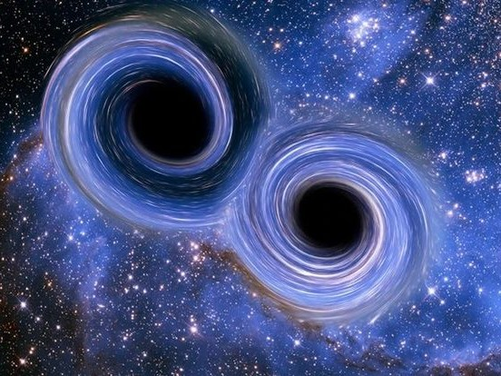
Stage 14
Black Holes & Galaxies
Nearly every large galaxy, including the Milky Way, has a supermassive black hole at its center. Oddly, the black hole's mass closely tracks properties of its host galaxy — like the mass and motion of the surrounding stars — a link known as the M-sigma relation.
This suggests galaxies and their black holes grow together, a process called co-evolution. Gas falling toward the center can trigger bursts of star formation, while energy from an actively feeding black hole can blast gas outward, slowing or even stopping future star formation.
Galaxy mergers likely play a big role too, pushing gas toward the center and eventually merging the black holes themselves — a process expected to produce gravitational waves that future observatories could detect.
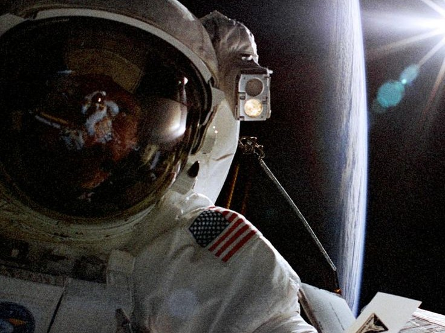
Stage 15
Myths vs. Facts
- Myth Black holes suck in everything nearby.
- Fact They pull with the same gravity as any equal mass. Swap the Sun for an equal-mass black hole, and Earth's orbit stays the same.
- Myth Black holes are tunnels to other universes.
- Fact "Wormholes" are allowed by the math of relativity, but nothing shows real black holes work this way.
- Myth Black holes are empty holes in space.
- Fact They're extremely dense — the opposite of empty — packing huge mass into a tiny space.
- Myth You'd see a black hole approaching in the sky.
- Fact A black hole gives off no light of its own; it's usually spotted only through its effect on nearby matter.
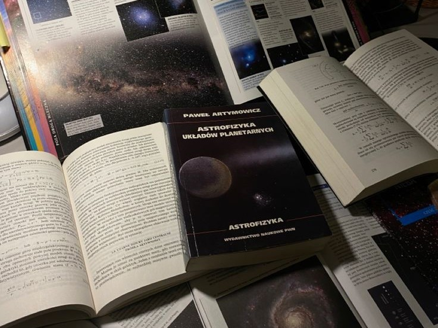
Stage 16
Frequently Asked Questions
Only if one passed extremely close, and none are expected to. The nearest known black hole is thousands of light-years away and poses no risk to us.
Near a small black hole, tidal forces would stretch you apart before you reach the horizon. Near a supermassive one, you could cross it in one piece, but you'd never send information back, and escape is impossible.
In theory yes, through Hawking radiation they slowly lose mass. For any known black hole, this would take far longer than the age of the universe.
Through indirect clues: orbits of nearby stars, glowing accretion disks, gravitational lensing, X-ray light, and gravitational waves from mergers detected by observatories like LIGO.
No. Sagittarius A* is about 27,000 light-years away, far too distant to have any real effect on our solar system.
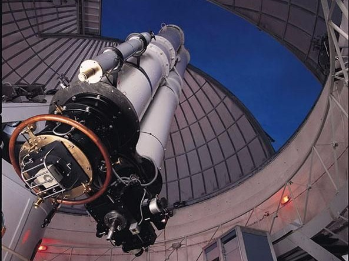
Stage 17
References
This documentary draws on peer-reviewed research and data from leading scientific institutions, including:
- Event Horizon Telescope Collaboration, "First M87 Event Horizon Telescope Results," The Astrophysical Journal Letters, 2019.
- Event Horizon Telescope Collaboration, "First Sagittarius A* Event Horizon Telescope Results," The Astrophysical Journal Letters, 2022.
- Hawking, S. W., "Particle Creation by Black Holes," Communications in Mathematical Physics, 1975.
- Schwarzschild, K., "On the Gravitational Field of a Point Mass," 1916.
- NASA Jet Propulsion Laboratory — Black Hole science resources.
- NASA Goddard Space Flight Center — Black Hole visualization archive.
- Genzel, R. & Ghez, A., Nobel Prize in Physics lectures, 2020.
For Students
Download the Complete Notes
Every section of this journey, condensed into a single study-ready document — free to download, share, and revise from.
Download Complete Notes